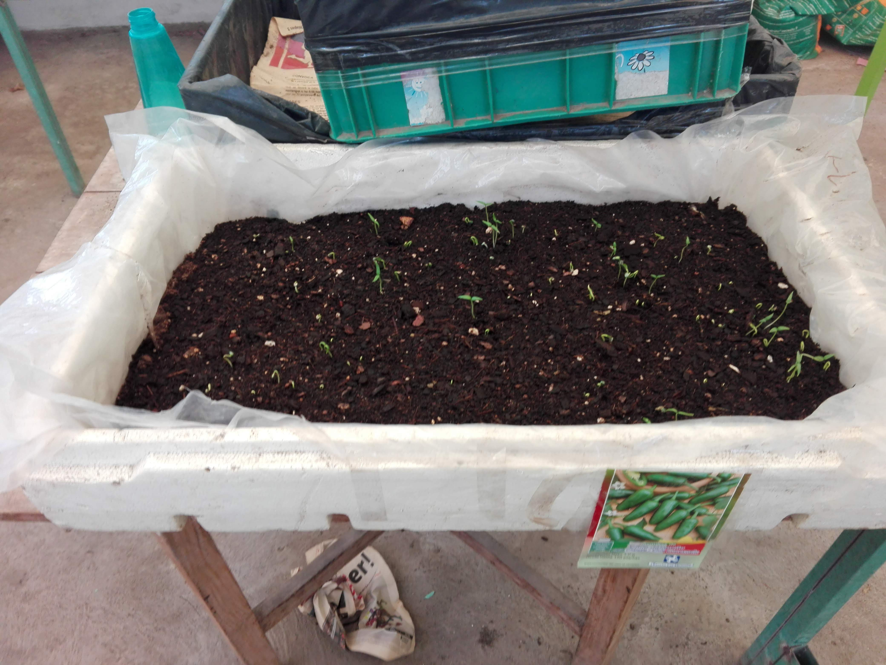
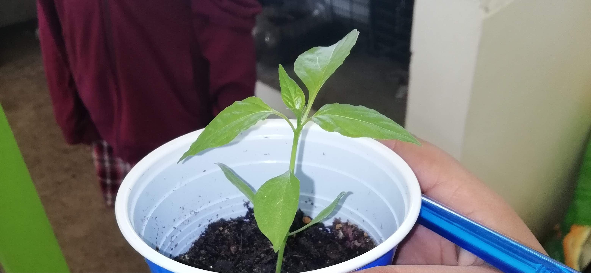
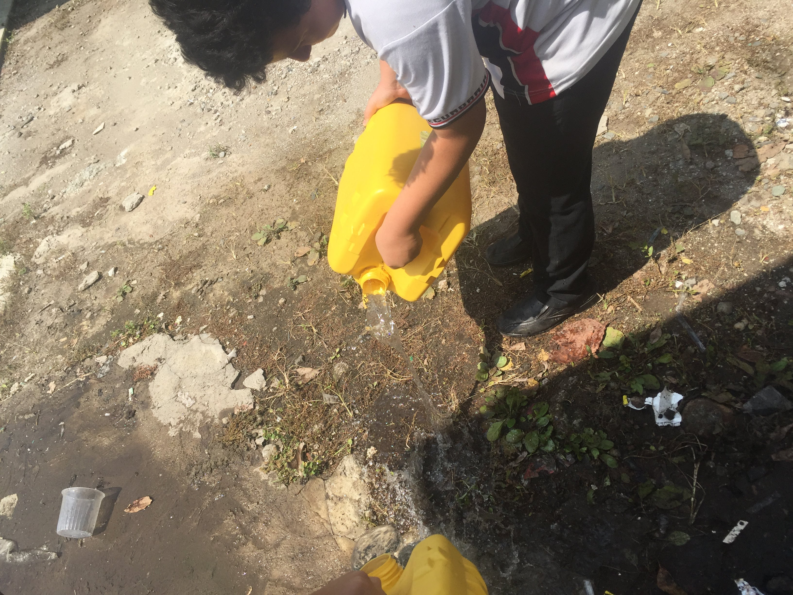
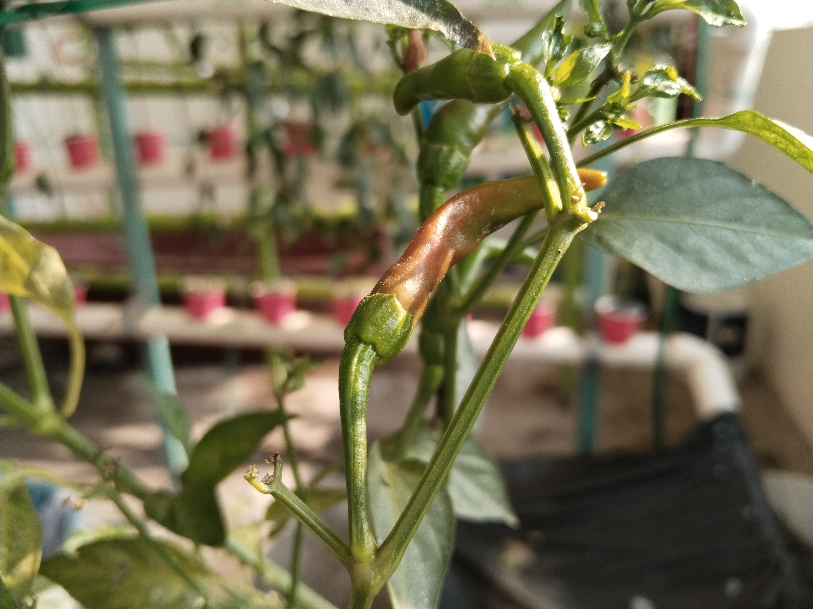
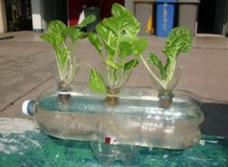

Fundamentos Científicos
La hidroponía es la ciencia de cultivar plantas en agua en lugar de tierra. Su secreto está en disolver directamente los nutrientes (como nitrógeno y fósforo) en el agua para que las raíces los absorban sin esfuerzo, permitiendo que la planta crezca hasta un 50% más rápido. Para que esto funcione, los científicos controlan que el agua tenga el pH correcto y suficiente oxígeno para que las raíces no se ahoguen. Es un sistema inteligente que recicla el agua, ahorra espacio y permite producir alimentos frescos de forma limpia y ecológica en cualquier lugar.


Nutrición y Química
La hidroponía es química aplicada que nutre a las plantas directamente con minerales disueltos en agua. Al controlar el pH y la concentración de sales, las raíces absorben su alimento sin esfuerzo y de forma inmediata. Esto permite que los cultivos crezcan mucho más rápido y sanos, utilizando un 90% menos de agua que la agricultura tradicional al eliminar la necesidad de tierra.


Sustratos y Soporte
En la hidroponía, al no haber tierra, usamos sustratos como la fibra de coco, perlita o lana de roca. Estos materiales no alimentan a la planta, sino que sirven de soporte físico para que las raíces se sujeten y no se caigan. Su función científica es mantener un equilibrio perfecto entre la humedad para que la planta beba y el aire para que las raíces respiren sin pudrirse.


Conexión con mis Materias
Matemáticas
La usas para calcular cuántos litros de agua necesitas, medir el crecimiento de las plantas en centímetros, calcular porcentajes de nutrientes y usar reglas de tres para las mezclas de la solución.
Español
Te sirve para practicar la redacción de informes de experimentos, seguir instrucciones técnicas de manuales y mejorar tu vocabulario con términos científicos nuevos.
Formación Cívica y Ética
Te ayuda a entender la responsabilidad ambiental, el cuidado de los seres vivos y cómo podemos crear sistemas de alimentación más justos y sostenibles para el mundo.
Tecnología
Es pura innovación. Aprendes sobre diseño de sistemas, uso de bombas, automatización con sensores para medir el agua y cómo aplicar la ingeniería para resolver problemas de espacio y recursos.


• Herencia Antigua: Los Aztecas ya usaban hidroponía en sus chinampas (balsas de cultivo) mucho antes de que existiera la tecnología moderna.
• Dieta Espacial: La NASA cultiva vegetales en la Estación Espacial Internacional usando hidroponía porque es imposible llevar tierra al espacio.
🍎 Salud y Bienestar:
• Libre de Químicos: Como no hay tierra, hay menos plagas, por lo que casi no se necesitan pesticidas o venenos para cuidar las plantas.
• Más Vitaminas: Al controlar exactamente lo que la planta "come", los frutos suelen tener un sabor más intenso y mayor contenido nutricional.